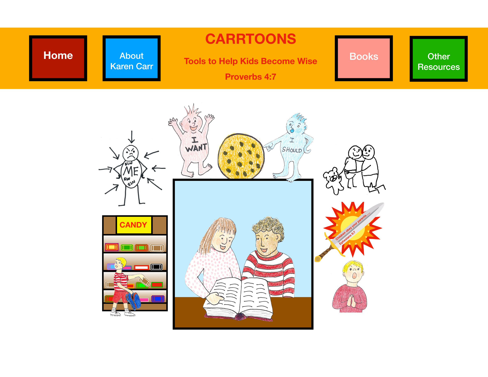
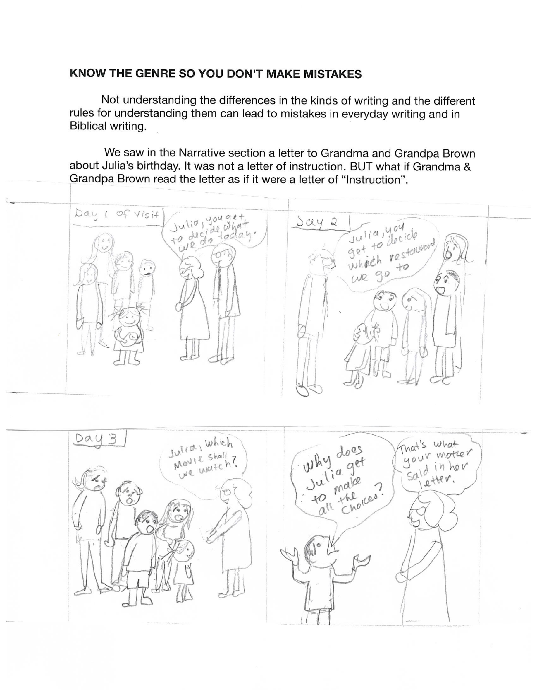
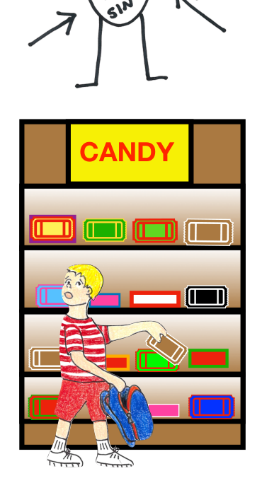
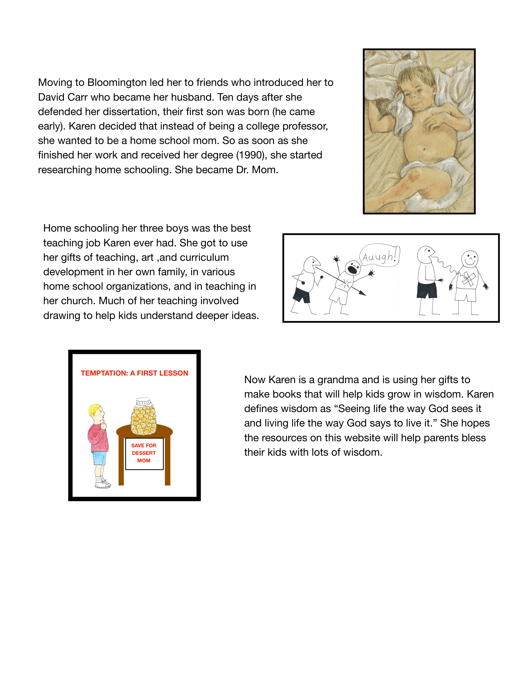

Reading together stays central.
Karen's drawings keep children close to the page and close to one another. The site does not need to shout when the pictures already invite them in.
01
Opening Spread
This version treats CarrToons like a printed ledger: plates, notes, margins, and a clear table of contents. The tone is steadier and more literary, but the material is still Karen's own world of warm drawings, Bible lessons, and wise choices.

02
Sample Chapters
The Wise Child and the Word of God introduces children to authority, context, meaning, and genre without thinning the ideas down into slogans.



03
Lesson Scenes
Karen's drawings keep children close to the page and close to one another. The site does not need to shout when the pictures already invite them in.

Temptation, speech, obedience, kindness, and prayer are taught through scenes a child can picture again later when the choice is real.

The tone stays gentle, but the purpose stays plain. CarrToons is meant to train wisdom, not merely decorate a page.
04
Karen Carr

Karen Carr taught art in Indiana schools, built curriculum, homeschooled her sons, and kept using drawing as a way to make difficult ideas graspable for children.
CarrToons grows out of that long practice. The books were not invented to fit a trend. They were drawn because children kept needing to see what wisdom looked like.


05
Further Titles
This final spread works like a shelf list. It keeps the future material plain and visible instead of turning it into generic marketing promises.